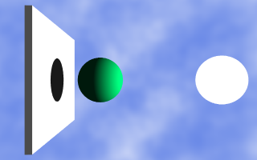
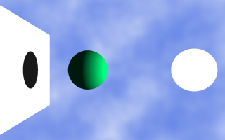
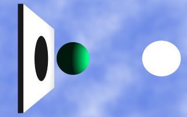
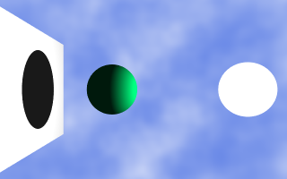

Though you can illuminate objects in a scene only using an ambient light, most XSight RT scenes requires one or more light sources. These are the types of light sources supported by XSight RT:
When a point light or a spot light are defined at the same location as the camera, a very simple but effective optimization is possible. Let's say a visual ray emitted by the camera hits a shape. According to the basic ray tracing algorithm, the next step is check whether the hit point is illuminated or not. This check is done by tracing another ray from the hit point towards each luminary in the scene. But, in the case the point light is located exactly at the same position as the camera, there's no need for such a test: we are dealing with this point just because it is visible from the camera's location!
A point light is an idealized light source, and it is the simplest light model. All rays are casted from the same location, and always with the same intensity. Shadows produced by point lights exhibit very neat borders. The image below shows the effect of two point lights with different colors floating over a sphere:
The point light at the right of the sphere emits golden light, and the one at the left, emits blue light. Since these are complementary colors, they sum their intensities and yield a white shade. In the areas on the floor ocluded by the sphere, you see what would happen after turning off each of the point lights.
Parallel lights emulates a point light so distant from the scene that all of its emitted rays are parallel.
|  |  |
|  |  |
Parallel is accepted as a synonym of ParallelLight.
While a point light emit rays in all directions, a spot light only emit rays inside a cone with center at the light's location. Instead of showing a clear-cut transition between the shadow area and the illuminated area, the spot light can be defined with a transition area, where the light intensity steadily decreases until it drops to zero in the outer area.
In the real world, no light source is a perfect point. Since real light sources have an area, real shadows have no neat borders: every shadow is surrounded by a penumbra area. From any given point, the light source may be totally visible, totally hidden or partially ocluded.
XSight RT emulates this behaviour sampling different points in the light area, using Monte Carlo integration:
Note that the border of the right sphere is as neat as the border of the left sphere.
There's a lesson in the above image: if you just want to blur a distant shadow, you should try first with the focal sampler before resorting to a more CPU expensive spheric light.
Home | Small Instantiation Language overview | Scenes | Samplers | Cameras | Ambient light | Background | Predefined shapes